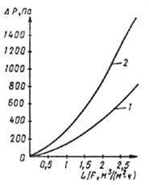
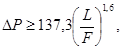
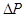
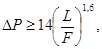
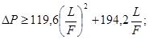
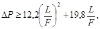

СТРОИТЕЛЬНЫЕ НОРМЫ И ПРАВИЛА
ПРИЕМКА В ЭКСПЛУАТАЦИЮ ЗАКОНЧЕННЫХ СТРОИТЕЛЬСТВОМ ЗАЩИТНЫХ СООРУЖЕНИЙ И ИХ СОДЕРЖАНИЕ В МИРНОЕ ВРЕМЯ
СНиП 3.01.09-84
ГОСУДАРСТВЕННЫЙ КОМИТЕТ СССР
ПО ДЕЛАМ СТРОИТЕЛЬСТВА
Москва 1985
РАЗРАБОТАНЫ Центральным научно-исследовательским и проектно-экспериментальным институтом промышленных зданий и сооружений (С.А. Лохов - руководитель темы) и Государственным проектным институтом Сантехпроект Госстроя СССР (Е.Н. Пылаев - руководитель темы) с участием Штаба гражданской обороны СССР и Моспромпроекта (мастерская № 6) ГлавАПУ г. Москвы.
ВНЕСЕНЫ ЦНИИ Промзданий Госстроя СССР.
ПОДГОТОВЛЕНЫ К УТВЕРЖДЕНИЮ Главным управлением технического нормирования и стандартизации Госстроя СССР (К.М. Кузьмин).
С введением в действие СНиП 3.01.09-84 «Приемка в эксплуатацию законченных строительством защитных сооружений гражданской обороны и их содержание в мирное время» утрачивает силу «Инструкция по приемке в эксплуатацию законченных строительством защитных сооружений гражданской обороны и их использованию в мирное время» (СН 464-74).
|
Государственный комитет СССР по делам строительства (Госстрой СССР) |
Строительные нормы и правила |
СНиП 3.01.09-84 |
|
Приемка в эксплуатацию законченных строительством защитных сооружений гражданской обороны и их содержание в мирное время |
Взамен СН 464‑74 |
Настоящие нормы должны выполняться при приемке в эксплуатацию законченных строительством (реконструкцией) защитных сооружений гражданской обороны (убежищ, противорадиационных укрытий) и их содержании в мирное время.
При приемке защитных сооружений гражданской обороны в эксплуатацию следует руководствоваться также правилами СНиП III-3-81.
Примечание. В дальнейшем защитные сооружения гражданской обороны именуются «защитные сооружения».
1.1. Государственные приемочные комиссии принимают в эксплуатацию законченные строительством защитные сооружения:
встроенные в здания, входящие в комплекс строительства объектов производственного или жилищно-гражданского назначения, а также предусмотренные в составе вновь возводимых и реконструируемых рудников и шахт, - вместе с основным объектом строительства или его пусковым комплексом;
отдельно стоящие, строящиеся по самостоятельному титульному списку, а также защитные сооружения, оборудуемые в существующих зданиях, сооружениях и горных выработках действующих, законсервированных и отработанных рудников и шахт, - сразу по окончании строительства.
1.2. Законченные строительством отдельно стоящие или встроенные защитные сооружения, входящие в состав объектов производственного и жилищно-гражданского назначения, при условии выполнения строительно-монтажных работ, проведения комплексного опробования оборудования разрешается принимать в эксплуатацию до завершения строительства указанных объектов. В этом случае приемка осуществляется рабочими комиссиями с последующим предъявлением их государственным приемочным комиссиям, принимающим объекты в целом.
|
Внесены ЦНИИ Промзданий Госстроя СССР |
Утверждены постановлением
Государственного комитета СССР по делам строительства |
Срок введения в действие |
1.3. Акты приемки оборудования и акты рабочей и государственной комиссий о приемке законченного строительством защитного сооружения должны составляться по формам, приведенным в прил. 1-5 СНиП III-3-81.
1.4. Рабочие и государственные приемочные комиссии назначаются- в соответствии с требованиями СНиП III-3-81.
В состав государственных и рабочих комиссий по приемке в эксплуатацию законченных строительством защитных сооружений должны также входить представители штаба гражданской обороны области (города, района).
1.5. Приемка в эксплуатацию защитных сооружений с недоделками, отступлениями от утвержденного проекта, а также без проверки работы и проведения испытания всего установленного оборудования (в том числе средств фильтровентиляции и регенерации) запрещается.
В случае нарушения правил приемки председатели и члены комиссий, а также лица, понуждающие к приемке в эксплуатацию защитных сооружений с нарушением настоящих правил, привлекаются к административной, дисциплинарной и иной ответственности в соответствии с действующим законодательством.
1.6. Генеральный подрядчик кроме документации, предусмотренной СНиП III-3-81, по защитным сооружениям представляет рабочим комиссиям акты:
проверки герметичности убежища, а также исправности герметических и защитных (противовзрывных) устройств;
замеров аэродинамического сопротивления перемычек и параметров естественной тяги в горных выработках, где размещаются защитные сооружения;
освидетельствования скрытых работ по устройству гидроизоляции, отводу поверхностных и грунтовых вод, установке арматуры в железобетоне и сопряжению конструктивных элементов, по устройству вводов инженерных коммуникаций;
испытания и комплексного опробования защищенной дизельной электростанции (ДЭС) убежища;
испытания и наладки систем воздухоснабжения и производительности вентиляторов;
испытания изоляции электрокабеля;
испытания и освидетельствования емкостей для воды.
Кроме того, рабочим комиссиям предъявляются паспорта на установленное оборудование, а также инструкции и документы по:
комплексной проверке работоспособности и надежности систем жизнеобеспечения защитного сооружения;
проверке производительности элементов внутреннего оборудования (вентиляторов, насосов, фильтров и т. п.);
проверке местных сопротивлений противовзрывных устройств (УЗС и МЗС), клапанов, фильтров, воздуховодов и системы вентиляции в целом.
1.7. Датой ввода в эксплуатацию защитных сооружений считается дата подписания акта государственной приемочной комиссией.
Датой ввода в эксплуатацию защитного сооружения, принимаемого рабочей комиссией в соответствии с требованиями п. 1.2 настоящего СНиП, считается дата подписания акта рабочей комиссией.
2.1. Рабочие комиссии до предъявления заказчиком государственной комиссии к приемке в эксплуатацию защитного сооружения обязаны выполнить работы, предусмотренные СНиП III-3-81.
Кроме того, рабочие комиссии должны проверить:
а) при приемке в эксплуатацию встроенных и отдельно стоящих защитных сооружений:
состояние ограждающих конструкций, входов, аварийных выходов, защитно-герметических дверей (ворот, ставен) и их соответствие классу защиты сооружения, дренажных систем и систем автоматического пожаротушения;
наличие и качество закладных деталей и других приспособлений, предназначенных для заделки технологических проемов при переводе сооружения на режим убежища (укрытия);
исправность противовзрывных устройств (МЗС, УЗС и др.), расширительных камер, задвижек на трубопроводах герметических клапанов на воздухозаборных и вытяжных каналах, клапанов избыточного давления;
герметичность убежища;
б) при приемке в эксплуатацию защитных сооружений, расположенных в горных выработках:
маршруты движения укрываемых от рабочих мест к защитным сооружениям и их защищенность от воздействия средств поражения (наличие защитных перемычек, самоспасателей, пунктов переключения самоспасателей, указателей расстояния и направления движения и т.д.);
работоспособность системы электроснабжения защитных сооружений с использованием аккумуляторных батарей электровозов и систем их автоматического регулирования;
состояние путей эвакуации укрываемых из защитного сооружения.
2.2. При приемке средств связи проверяется работоспособность электросвязи, проводного вещания и радиосвязи, а также средств оповещения гражданской обороны объекта.
2.3. Приемка рабочей комиссией инженерно-технического оборудования должна завершаться проверкой работоспособности всех систем сооружения в совместной (комплексной) работе.
Кроме этого, для защитного сооружения, расположенного в горной выработке, должны быть произведены замеры количества воздуха, поступающего в защитное сооружение в режиме чистой вентиляции за счет естественной тяги.
2.4. Права, обязанности и порядок работы государственных комиссий по приемке в эксплуатацию защитных сооружений гражданской обороны определяются требованиями СНиП III-3-81.
2.5. Проверка состояния ограждающих конструкций осуществляется внешним осмотром, при этом выявляются:
соответствие проекту конструкций стен, покрытия, перегородок, перемычек, тамбуров-шлюзов, туннелей, шахт, тамбуров и герметических дверей (ворот, ставен);
правильность выполнения монтажа конструкций, плотность примыкания строительных элементов друг к другу;
правильность выполнения вводов в убежище электрических кабелей, кабелей связи, а также коммуникаций водоснабжения, канализации и теплоснабжения;
соответственно проекту толщина подсыпки грунта на покрытие.
2.6. Система автоматического пожаротушения при приемке проверяется на работоспособность в соответствии с требованиями инструкции по ее эксплуатации.
2.7. Работоспособность, дренажной системы должна проверяться, путем просвечивания дренажных труб из одного колодца до другого. При этом на зеркале должен быть виден четкий контур дренажной трубы и света.
2.8. Испытание защитных свойств сооружения от затекания наружного воздуха должно включать два этапа:
первый этап - испытание сооружения на герметичность;
второй этап - испытание сооружения и систем воздухоснабжения на способность поддержания установленных проектом величин избыточного давления (подпора) воздуха.
2.9. Герметичность убежища проверяется в такой последовательности:
закрываются все входные двери, ставни и люки, стопорятся клапаны избыточного давления, закрываются герметические клапаны и заглушки на воздуховодах вытяжных систем, сифоны заполняются водой;
включается в работу приточная система вентиляции, отрегулированная на заданную проектом производительность, и по производительности вентиляторов определяется количество воздуха, подаваемого в убежище;
измеряется подпор воздуха в убежище тягонапоромером жидкостным (ТНЖ) или другим пригодным для этой цели прибором. Во всех случаях замеренное значение подпора должно быть не менее значения, указанного на графике, или величины подпора, определяемой по формулам:

ГРАФИК ДЛЯ ОЦЕНКИ ГЕРМЕТИЧНОСТИ УБЕЖИЩ
1 - нормативная кривая подпоров воздуха в убежищах с обычной герметичностью;
2 - нормативная кривая подпоров воздуха в убежищах с повышенной герметичностью
для убежищ с обычной герметичностью (в единицах СИ)

где 
то же, в единицах МКГСС

где - подпор воздуха в убежище, кг/м2 (мм вод. ст.);
для убежищ с повышенной герметичностью (в единицах СИ)

то же, в единицах МКГСС

где L - воздухоподача приточной системы вентиляции, м3/ч;
F - площадь ограждений по внутреннему контуру герметизации, м2.
При величинах замеренного подпора воздуха менее определенных по графику или формулам (1) и (2) выявляются места повышенной утечки воздуха по отклонению пламени свечи или с помощью мыльной пленки, при этом проверяются притворы герметических устройств (дверей, люков, клапанов и др.), примыкание коробок дверей и ставен к ограждающим конструкциям, уплотнители клиновых затворов, места прохода через ограждающие конструкции вводов коммуникаций и установка других закладных деталей, стыки сборных железобетонных элементов.
После устранения выявленных неплотностей производится повторная проверка герметичности убежища. Без доведения до требуемой герметичности убежище в эксплуатацию не принимается.
2.10. Надежность и удобство закрывания дверей, надежность крепления уплотняющих прокладок, плотность примыкания дверных полотен к коробкам и степень перекрытия подвижными элементами сечений воздуховодов должны проверяться путем их опробования.
2.11. Испытание сооружения и систем воздухоснабжения на способность поддержания установленных величин избыточного давления (подпора) воздуха при режимах II и III должно производиться в следующем порядке:
включаются система приточной вентиляции режима II и система вытяжной вентиляции, при этом соответствующие герметические клапаны должны быть открыты, а клапаны перетекания - свободны. Величина подпора воздуха в убежище должна составлять не менее 50 Па (5 мм вод. ст.);
включается система поддержания подпора воздуха режима III. Остальные системы не работают, при этом должны быть закрыты все герметические клапаны на вытяжных системах, застопорены в закрытом положении клапаны избыточного давления в тамбурах входов. Величина подпора воздуха в убежище должна быть не менее нормативной, указанной в прил. 1 СНиП II-11-77.
2.12. Приемка инженерно-технического оборудования должна производиться после индивидуальных испытаний и комплексного опробования, проводимых специализированными организациями. При приемке оборудования рабочие комиссии проверяют:
правильность установки вентиляторов, противопыльных фильтров, воздухоохлаждающих установок, автономных кондиционеров, холодильных машин, а также изготовления и монтажа воздуховодов в соответствии с требованиями СНиП III-28-75;
правильность установки специального оборудования - фильтров-поглотителей, предфильтров, фильтров для очистки наружного воздуха от окиси углерода (ФГ-70), установок регенерации воздуха, герметических клапанов, клапанов избыточного давления и противовзрывных устройств;
наличие приспособлений, фиксирующих положение вентиляционных запорных и регулирующих устройств, и легкость управления этими устройствами;
работу подвижных элементов противовзрывных устройств;
работоспособность электронагревателей и водяных охладителей;
загрузку гравийных охладителей;
наличие приборов для измерения подпора воздуха в убежище и работоспособность трубы, соединяющей подпоромер с атмосферой;
состояние фильтров и регенеративных средств;
крепление оборудования и воздуховодов;
удобство обслуживания оборудования;
работоспособность вытяжных воздуховодов от аккумуляторных шкафов;
герметичность проточных баков запаса питьевой воды;
удобство вращения рукоятки ручных вентиляторов расчетом звена;
правильность выполнения обвязки баков трубами для обеспечения обмена воды во всех баках;
наличие актов о материалах, применяемых для покраски баков питьевой воды;
удобство открывания и плотность прилегания крышек отверстий на фекальных резервуарах;
плотность резервуара для сбора фекальных вод, наличие возможности его очистки;
соответствие проектным данным производительности, полного давления, направления вращения и числа оборотов вентиляторов;
соответствие проекту расходов воздуха, подаваемого (удаляемого) системами вентиляции в сооружение (из сооружения) и каждое помещение при всех трех режимах, а также при режиме мирного времени, и соответствие при этом эксплуатационного подпора воздуха нормативному;
герметичность колонок фильтров-поглотителей и воздуховодов, находящихся под разрежением до фильтров-поглотителей;
надежность работы герметических клапанов, в особенности тех, которые при режимах II и III находятся под разрежением;
эффективность работы воздухоохлаждающих установок, автономных кондиционеров и холодильных машин;
соответствие проектным данным производительности насосных установок, подающих воду к воздухоохлаждающим установкам, автономным кондиционерам и холодильным машинам;
работу клапанов избыточного давления;
соответствие проекту объема воздуха, подаваемого в вентилируемые тамбуры (убежища и ДЭС);
правильность выполнения антикоррозионной защиты оборудования, воздуховодов и трубопроводов.
2.13. Проверка соответствия объемов воздуха, подаваемого системами вентиляции при различных режимах, проектному производится в соответствии с «Временной инструкцией по пуску, наладке и эксплуатации вентиляционных установок на промышленных предприятиях».
2.14. Герметичность системы вентиляции с фильтрами ФГ и колонками фильтров-поглотителей, фланцевых и сварных соединений воздуховодов, по которым проходит наружный неочищенный воздух (от мест забора наружного воздуха до герметических клапанов), проверяется при помощи мыльного раствора, для чего:
закрываются все герметические двери и ставни на входах и в фильтровентиляционных камерах, а также герметический клапан на вытяжной системе из санузлов;
закрываются герметические клапаны на воздухоподающих системах, кроме герметического клапана перед фильтрами-поглотителями, и герметические клапаны на всех вытяжных системах, кроме клапана на системе, отсасывающей воздух из проверяемых помещений;
включается вытяжной вентилятор, отсасывающий воздух из помещения для укрываемых;
закрываются все задвижки, вентили и пробковые краны на трубопроводах водопровода, канализации, подпоромерной линии, вентиляции аккумуляторных шкафов и других каналах, пересекающих линию герметизации чистой зоны;
обмазываются мыльным раствором все фланцевые, сварные и другие соединения. Появившиеся мыльные пузыри указывают на места просачивания воздуха.
Проверку герметичности колонок фильтров-поглотителей допускается производить также с помощью этилмеркаптана в соответствии с требованиями «Инструкции по оценке качественного состояния фильтров-поглотителей в защитных сооружениях гражданской обороны».
Места нарушения герметичности соединений воздуховодов можно определить по отклонению пламени свечи при работающих приточных вентиляторах (за исключением убежищ, расположенных в подземных горных выработках).
Не допускаются к установке и эксплуатации фильтры-поглотители с вмятинами и другими повреждениями корпусов, а также фильтры и регенеративные патроны с закрашенными маркировочными надписями или поврежденной заводской окраской.
2.15. При проверке исправности герметического клапана необходимо в воздуховоде перед закрытым клапаном, по ходу движения воздуха, просверлить отверстие диаметром 6-8 мм, закрыть все, кроме одного (ближайшего к клапану), приточные отверстия и включить в работу систему вентиляции. Затем в просверленное отверстие впрыснуть пульверизатором 50-75 г нашатырного спирта. Отсутствие запаха аммиака в ближайшем приточном отверстии (за клапаном) подтверждает герметичность клапана. После проведения испытания отверстие заделывается.
Исправность клапана избыточного давления в застопоренном состоянии проверяется путем просвечивания его со стороны тамбура в неосвещенное помещение убежища. Клапан считается герметичным, если на неосвещенной стороне по периметру прилегания тарели к седлу свет не виден.
2.16. Проверка холодильных машин и насосных установок производится в соответствии с «Инструкцией по испытанию и наладке систем кондиционирования воздуха». Производительность автономных кондиционеров проверяется по количеству холода и объему воздуха.
2.17. При приемке гравийных охладителей необходимо проверить:
соответствие проекту объема и высоты засыпки щебня или гравия;
размеры щебня или гравия (30-40 мм);
отсутствие в гравийном охладителе мусора и органических включений.
2.18. При приемке вытяжных систем убежищ, в которых предусмотрено дымоудаление с помощью вентиляции, должна быть проверена ее производительность.
2.19. В вентилируемом тамбуре убежища должна быть проверена кратность воздухообмена при продолжительности вентиляции 6 мин.
2.20. При приемке защищенных ДЭС генеральный подрядчик представляет рабочей комиссии:
акт на монтаж оборудования, систем технологических трубопроводов, электрической части ДЭС;
акты испытания систем водоснабжения, вентиляции, электрооборудования и автоматики;
проектно-техническую документацию на ДЭС и документацию на поставляемое оборудование, инструкции по эксплуатации и паспорта на установленное оборудование.
2.21. Рабочая комиссия при приемке смонтированного оборудования ДЭС проверяет:
горизонтальность установки дизель-генератора и узла охлаждения на фундаментах, при этом уклон должен быть не более 0,002 в продольном и 0,003 в поперечном направлениях для дизель-генератора и не более 0,005 в продольном и поперечном направлениях для узла охлаждения;
соответствие проекту уложенных кабелей для электрических сетей и наличие на них компенсационных устройств;
наличие порога в дверях помещения для хранения горюче-смазочных материалов или наличие поддона под расходным топливным баком при расположении его в машинном зале ДЭС;
наличие аварийных светильников в ДЭС;
наличие и исправность электрифицированного указателя «Вход», светильников во входах, розеток для переносных ламп.
2.22. В системах технологических трубопроводов при приемке проверяются:
соответствие материалов, деталей, узлов, арматуры и другого оборудования проекту;
наличие опор под трубопроводами. Расположение опор должно исключать передачу усилий от трубопроводов на оборудование, к которому они присоединены;
запорная арматура на легкость ее открывания и закрывания. Штурвалы арматуры должны быть обращены в сторону, удобную для обслуживания;
соответствие выполнения теплоизоляции требованиям проекта, а также правильность установки сборника конденсата и компенсатора.
2.23. При приемке дизеля на холостом ходу и под нагрузкой проверяются:
плотность соединения трубопроводов всех систем и отсутствие подтеканий в вентилях, насосах и емкостях;
герметичность систем газовыхлопа и воздухозабора;
ручное управление дизель-генераторами с местного пульта;
надежность остановки агрегата стоп-устройством;
регулирование числа оборотов;
температура воды первого контура охлаждения и масла;
работа систем подачи топлива и масла;
работа системы удаления тепла от узла охлаждения.
2.24. Приемка электрической части ДЭС должна производиться согласно требованиям глав 1-8 Правил устройства электроустановок (ПУЭ).
2.25. Для комплексной приемки ДЭС после выполнения требований пп. 2.22 и 2.23 настоящего СНиП необходимо:
провести операции по подготовке дизель-генератора к запуску и закрыть герметические двери входа в ДЭС и в помещение узла охлаждения дизеля;
включить аварийное освещение ДЭС и отключить внешнее электроснабжение; и 0,003 в поперечном направлениях для дизель-генератора и не более 0,005 в продольном и поперечном направлениях для узла охлаждения;
соответствие проекту уложенных кабелей для электрических сетей и наличие на них компенсационных устройств;
наличие порога в дверях помещения для хранения горюче-смазочных материалов или наличие поддона под расходным топливным баком при расположении его в машинном зале ДЭС;
наличие аварийных светильников в ДЭС;
наличие и исправность электрифицированного указателя «Вход», светильников во входах, розеток для переносных ламп.
2.22. В системах технологических трубопроводов при приемке проверяются:
соответствие материалов, деталей, узлов, арматуры и другого оборудования проекту;
наличие опор под трубопроводами. Расположение опор должно исключать передачу усилий от трубопроводов на оборудование, к которому они присоединены;
запорная арматура на легкость ее открывания и закрывания. Штурвалы арматуры должны быть обращены в сторону, удобную для обслуживания;
соответствие выполнения теплоизоляции требованиям проекта, а также правильность установки сборника конденсата и компенсатора.
2.23. При приемке дизеля на холостом ходу и под нагрузкой проверяются:
плотность соединения трубопроводов всех систем и отсутствие подтеканий в вентилях, насосах и емкостях;
герметичность систем газовыхлопа и воздухозабора;
ручное управление дизель-генераторами с местного пульта;
надежность остановки агрегата стоп-устройством;
регулирование числа оборотов;
температура воды первого контура охлаждения и масла;
работа систем подачи топлива и масла;
работа системы удаления тепла от узла охлаждения.
2.24. Приемка электрической части ДЭС должна производиться согласно требованиям глав 1-8 Правил устройства электроустановок (ПУЭ).
2.25. Для комплексной приемки ДЭС после выполнения требований пп. 2.22 и 2.23 настоящего СНиП необходимо:
провести операции по подготовке дизель-генератора к запуску и закрыть герметические двери входа в ДЭС и в помещение узла охлаждения дизеля;
включить аварийное освещение ДЭС и отключить внешнее электроснабжение;
произвести запуск дизеля и вывести дизель-генератор на рабочие обороты согласно инструкции по его эксплуатации;
включить последовательно электроосвещение, вентиляцию, водопровод и электрооборудование убежища.
2.26. При комплексной приемке ДЭС проверяются:
работа дизель-генератора за 1-2 ч в период приемки технологических систем сооружения рабочей комиссией;
обеспечение электроэнергией всех потребителей по режимам;
соблюдение требований п. 2.22 настоящего СНиП;
температура воздуха в машинном зале и помещении узла охлаждения дизеля (для агрегатов с вынесенным узлом охлаждения) при работе дизеля с полной нагрузкой.
3.1. Защитные сооружения в мирное время должны использоваться для нужд народного хозяйства и обслуживания населения в соответствии с требованиями СНиП 11-11-77.
При эксплуатации защитных сооружений в мирное время должны выполняться все требования, обеспечивающие пригодность помещений к переводу их в установленные сроки на режим защитных сооружений, и необходимые условия для пребывания людей в защитных сооружениях в военное время.
3.2. При эксплуатации защитных сооружений в мирное время должна быть обеспечена сохранность:
защитных свойств как сооружения в целом, так и отдельных его элементов: входов и аварийных выходов, защитно-герметических и герметических дверей и ставен, противовзрывных устройств;
герметизации и гидроизоляции всего защитного сооружения;
инженерно-технического оборудования и возможность к переводу его в любое время на эксплуатацию в режиме военного времени.
Запрещаются в защитных сооружениях перепланировка помещений, устройство отверстий или проемов в ограждающих конструкциях и не предусмотренный проектом демонтаж оборудования.
3.3. Предприятия, организации и учреждения, эксплуатирующие защитные сооружения в мирное время, назначают после приемки объекта в эксплуатацию ответственных, в обязанности которых должно входить осуществление систематического контроля за правильным содержанием помещений, сохранностью защитных устройств и инженерно-технического оборудования защитных сооружений.
3.4. В эксплуатируемом защитном сооружении должна быть следующая документация:
правила содержания и опись оборудования и имущества защитного сооружения;
планы внешних и внутренних инженерных сетей с указанием отключающих устройств;
паспорт убежища (противорадиационного укрытия), составляемый по форме обязательного приложения 1, журнал проверки состояния защитного сооружения, составляемый по форме обязательного приложения 2;
план защитного сооружения с указанием оборудования для сидения и лежания и путей эвакуации;
инструкции по эксплуатации фильтровентиляционного и другого инженерного оборудования, правила пользования приборами;
журнал эксплуатации фильтровентиляционного оборудования;
инструкция по обслуживанию и журнал учета работы ДЭС;
журнал результатов осмотров и контрольных проверок фильтров-поглотителей, фильтров ФГ-70, устройств регенерации и подпора воздуха;
формуляр фильтровентиляционного агрегата;
указания о порядке проветривания защитных сооружений;
инструкция по противопожарной безопасности;
список сигналов оповещения гражданской обороны;
список телефонов.
3.5. Состояние защитных сооружений проверяется при ежегодных и специальных (внеочередных) осмотрах.
Ежегодные и специальные осмотры производятся в порядке, устанавливаемом руководителями предприятий, организаций и учреждений, эксплуатирующих защитные сооружения в мирное время.
Специальные осмотры производятся после пожаров, землетрясений, ураганов, ливней, наводнений.
При осмотрах защитных сооружений должны проверяться:
общее состояние сооружения и состояние входов, аварийных выходов, воздухозаборных и выхлопных каналов;
состояние обвалования в отдельно стоящих и подсыпки покрытия во встроенных сооружениях, состояние кровли и боковых поверхностей горных выработок, крепи и защитно-герметических перемычек;
исправность дверей (ворот, ставен) и механизмов задраивания;
исправность защитных устройств, систем вентиляции, водоснабжения, канализации, электроснабжения, связи, автоматики и другого инженерного оборудования;
использование площадей помещений для нужд народного хозяйства и обслуживания населения;
наличие и состояние средств пожаротушения;
отсутствие протечек и просачивания грунтовых и поверхностных вод;
температура и относительная влажность воздуха в помещениях.
Результаты систематического осмотра записываются в журнал проверки состояния сооружения.
3.6. Комплексную проверку защитного сооружения необходимо проводить один раз в три года. При этом должны проверяться:
герметичность убежища в соответствии с требованиями п. 2.9 настоящего СНиП;
работоспособность всех систем инженерно-технического оборудования и защитных устройств;
возможность приведения защитного сооружения в готовность в соответствии с планом;
эксплуатация в режиме защитного сооружения в течение 6 ч с проверкой работы по режимам чистой вентиляции и фильтровентиляции.
3.7. Входы в защитные сооружения не допускается загромождать. Застройка участков вблизи входов, аварийных выходов и наружных воздухозаборных и вытяжных устройств без согласования со штабом гражданской обороны области (города, района) не допускается.
Защитно-герметические и герметические двери в период использования сооружения в мирное время должны находиться в открытом состоянии на подставках и прикрываться легкими съемными экранами. Для закрывания дверных проемов устраиваются обычные двери.
3.8. Помещения защитных сооружений должны быть сухими. Температура в этих помещениях в зимнее и летнее время должна поддерживаться в соответствии с требованиями по эксплуатации сооружения в мирное время. Поддержание помещений защитных сооружений и ремонт их производятся в соответствии с действующими положениями о проведении планово-предупредительных ремонтов зданий и сооружений в зависимости от их назначения в мирное время.
Защитные сооружения должны быть оборудованы в противопожарном отношении и иметь в зависимости от установленных в них технических средств необходимые средства пожаротушения в соответствии с действующими нормативами и проектом.
3.9. Инженерно-техническое оборудование защитных сооружений должно содержаться в исправности и готовности к использованию по назначению.
Содержание, эксплуатация, текущий и плановый ремонты инженерно-технического оборудования осуществляются в соответствии с инструкциями заводов-изготовителей, уточненными с учетом особенностей эксплуатации защитных сооружений.
3.10. Системы и элементы инженерно-технического оборудования убежищ, кроме вентиляционных систем ДЭС, фильтров-поглотителей, предфильтров, фильтров для очистки воздуха от окиси углерода, средств регенерации, гравийных воздухоохладителей, следует эксплуатировать при использовании этих сооружений в мирное время.
Масляные противопыльные фильтры в случае неиспользования их в мирное время рекомендуется демонтировать и хранить в фильтровентиляционном помещении.
Герметические клапаны до и после фильтров-поглотителей, устройств регенерации и фильтров для очистки воздуха от окиси углерода должны быть закрыты, за исключением периода работы системы фильтровентиляции при проверках.
Системы и элементы инженерно-технического оборудования противорадиационных укрытий должны эксплуатироваться в мирное время в необходимых объемах.
3.11. Исправность систем вентиляции следует проверять не реже одного раза в год путем проверки исправности вентиляторов приточных и вытяжных систем, фильтров-поглотителей, регенеративных установок, герметических клапанов, герметических соединений воздуховодов, воздухозаборных и вытяжных каналов и противовзрывных устройств.
При использовании системы чистой вентиляции в мирное время допускается увеличение сопротивления противопыльных фильтров (ФЯР) не более чем в 2 раза (запыление 50 %).
Примечание. Сопротивление фильтра определяется по разности статических давлений до и после фильтра.
3.12. Помещения защитных сооружений, в которых в мирное время не предусматривается постоянная работа вентиляционных систем, следует периодически проветривать наружным воздухом. При проветривании необходимо учитывать состояние наружного воздуха в зависимости от времени года и характера погоды: нельзя проветривать помещение влажным воздухом, т.е. во время дождя или сразу после него, а также в сырую туманную погоду. Нормальной в защитном сооружении (в мирное время) считается относительная влажность не выше 65-70 %.
Относительная влажность воздуха в сооружении измеряется психрометром.
Проветривание производится периодически. Периодичность проветривания определяется службой эксплуатации с учетом местных условий.
3.15. Исправность систем водоснабжения и канализации следует проверять не реже одного раза в год с опробованием вентилей, задвижек и водоразборных кранов.
В напорных емкостях аварийного запаса питьевой воды должен обеспечиваться проток воды с полным обменом ее в течение 2 сут.
Аварийные безнапорные емкости для питьевой воды должны содержаться в чистоте и заполняться водой при переводе на режим убежища (укрытия) после освидетельствования их представителем медицинской службы.
Водозаборные скважины, устраиваемые в качестве источника водоснабжения. следует периодически (не реже одного раза в месяц) включать на 2-3 ч для откачки воды.
3.14. Аварийные резервуары для сбора фекалий должны быть закрыты, пользоваться ими в мирное время запрещается. Задвижки на выпуске из резервуаров должны быть закрыты.
Санузлы, не используемые в мирное время, должны быть закрыты и опечатаны. Допускается использование их при учениях, но при этом следует производить периодический осмотр и ремонт.
Допускается использование помещений санузлов под кладовые, склады и другие подсобные помещения. В этом случае санузел отключается от системы канализации, а смонтированное оборудование (унитазы и смывные бачки) консервируется без его демонтажа. Расконсервация санузлов должна выполняться в установленные сроки при переводе защитного сооружения на режим убежища (укрытия).
3.15. Дизельные электростанции после испытаний подлежат консервации.
Расконсервация их производится в период перевода защитного сооружения на режим убежища и в период учений. После расконсервации не реже одного раза в неделю следует запускать дизель-агрегат и испытывать его под нагрузкой 30 мин.
Во время испытаний следует осуществлять контроль согласно требованиям п. 2.23 настоящего СНиП.
У агрегатов, имеющих электрический пуск, необходимо контролировать зарядку аккумуляторных батарей. У агрегатов, имеющих пуск сжатым воздухом, контролируется давление в пусковых баллонах.
ПАСПОРТ УБЕЖИЩА
|
ТЕХНИЧЕСКАЯ ХАРАКТЕРИСТИКА СИСТЕМ ВЕНТИЛЯЦИИ
|
Вентиляционная система |
Вентиляторы |
Фильтры и средства регенерации |
Герметические клапаны |
Противовзрывные устройства |
Насосы |
Калориферы или воздухоохладители |
Холодильные машины |
|||||||||||
|
Тип |
Кол-во |
Производительность |
Тип |
Кол-во |
Тип |
Кол-во |
Тип |
Кол-во |
Тип |
Кол-во |
Производительность |
Тип |
Кол-во |
Производительность |
Тип |
Кол-во |
Производительность |
|
|
1 |
2 |
3 |
4 |
5 |
6 |
7 |
8 |
9 |
10 |
11 |
12 |
13 |
14 |
15 |
16 |
17 |
18 |
19 |
|
10. Наличие и перечень измерительных приборов _____________________________ 11. Степень герметичности (величина подпора воздуха) ________________________ 12. Система отопления ___________________________________________________ 13. Система энергоснабжения _____________________________________________ 14. Система водоснабжения _______________________________________________ ________________________________________________________________________ (вид водопровода, скважина, емкость аварийных резервуаров) 15. Тип канализации и количество санитарно-технических приборов _____________ ________________________________________________________________________ 16. Инструмент, инвентарь и оборудование, имеющиеся в убежище (противорадиационном укрытии) _____________________________________________ 17. Дата заполнения паспорта ______________________________________________ Ответственный представитель организации, эксплуатирующей защитное сооружение ______________________ (подпись) Представитель штаба гражданской обороны области (города, района) ________________ (подпись) Примечание. Паспорт составляется в трех экземплярах: 1-й экз. находится в убежище (укрытии), 2-й - в службе убежищ объекта, 3-й - в штабе гражданской обороны области (города, района). |
ЖУРНАЛ ПРОВЕРКИ СОСТОЯНИЯ УБЕЖИЩА (ПРОТИВОРАДИАЦИОННОГО УКРЫТИЯ) № __________________________________________________________________________ [наименование организации, которой принадлежит убежище (противорадиационное укрытие)] расположенное по адресу ___________________________________________________
Примечание. Журнал хранится в убежище (противорадиационном укрытии). |
СОДЕРЖАНИЕ